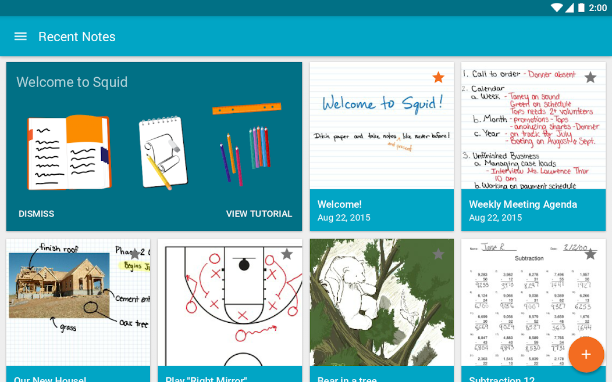

Squid 快问快答：手写笔记里最能打的 PDF 批注工具到底值不值得装
整理九个读者最想知道的问题，从定位、安装、核心用法到同类对比，一口气把 Squid 讲清楚。
整理一篇关于 Squid 的快问快答——这款主打手写 + PDF 批注的笔记应用，用了一段时间后把最常见的疑问集中回答。
Squid 到底是什么？一句话讲清楚
一款主打手写 + PDF 批注的笔记应用，Squid 官网上列出了它能做的所有事——核心竞争力是「笔」和「PDF」的组合。你可以把它理解为一支能写在 PDF 上的智能笔——导入一份讲义或作业 PDF，直接用手写笔在上面圈画批注，改完导出就是成品。它还支持投屏演示、教师批量批改、无限画布自由书写等场景，目标很明确：替代纸笔完成从记录到批注的整条链路。
谁真的需要装它？
三类人。第一类是有 PDF 批改需求的教师——收上来的电子作业直接导入，红笔圈画打分，导出即发还，整个批改链在一个应用里闭环。第二类是需要手写记录的学生——课堂上无限画布自由写公式画结构图，课后把讲义 PDF 导进去继续批注，笔记本和讲义不再分开。第三类是开会要做批注的职场人——会议前把议程 PDF 导入，会中直接在上面记录，投屏给会议室大屏就是演示材料。

怎么装？从哪里拿安装包？
安装包从官方下载拿，安卓用户注意选对版本——免费版有基础功能，进阶的教育版和云备份能力需要付费解锁。安装包不大，装上就能直接开用，不需要注册也能先试用。
新建笔记怎么搞？纸张和尺寸选什么好？
打开应用落在最近笔记页，右上角加号就是新建入口。进来先做两个决定：纸张类型和画布尺寸。纸张有标准横线、方格、数理工程坐标纸、音乐五线谱等十几种分类，点选即预览——犹豫的时候先选横线，后面可以随时换。尺寸方面，不打印就选无限画布，要打印交作业就 A4 或 Letter。设置里把默认纸张和尺寸定好，之后新建直接落纸就写，省每次选的时间。
PDF 批注是它的强项吗？和其他笔记应用比怎么样？
是。Squid 文档里把 PDF 批注的所有细节都讲透了，实际体验也确实有几个优势：第一，PDF 是一等公民——导入后不是贴图，是真正可搜索的文本层，批注和原 PDF 分离，不会破坏原文件；第二，笔画自然，手写笔支持不同粗细和颜色，红笔批改、蓝笔标注重点、荧光笔高亮一套下来颜色编码清晰；第三，导入图片也能批注——纸质作业拍张照导进去，照样圈画打分，和 PDF 没有区别。

写了一堆东西，数据能完整带走吗？
完全能。Squid 的官方承诺是「笔记是你的数据」，给了四种出口：PDF 和图片（PNG/JPEG）适合发给别人看或打印；.squidnote 是单篇笔记的完整可编辑格式，发给同样用 Squid 的人能继续改；.bak 是全部笔记的总备份，换机前留底、恢复出厂前救命用。想同步到其他设备，云备份或邮件/云盘传 .squidnote 文件过去导入就行，不被任何单一格式锁死。
有没有什么坑是新手容易踩的？
三个。第一，换机或恢复出厂前忘了备份——Squid 的本地数据清掉就没了，一定要提前导出 .bak 或开云备份。第二，把 .bak 当可编辑文件用——它是整包备份，恢复时会覆盖当前所有数据，操作前想清楚。第三，免费版的功能边界——云备份、批量导出、教育版的团队管理能力都要付费，个人轻度使用免费版完全够，但老师批量批改作业建议直接上教育版。
支持投屏演示吗？怎么搞？
支持，而且体验不错。进入任意一篇笔记，顶栏的投屏图标点一下就进入演示模式，能把当前页面投到会议室大屏或教室投影。讲评时直接在投屏的页面上手写圈画，讲到哪画到哪，讲完的页面就是现成的复习材料，随堂发下去就行。对老师和会议主持人来说，这个功能比 PPT 演示灵活得多。
和同类笔记应用比，选 Squid 还是别家？
关键看你的核心需求。如果你最常用的场景是 PDF 批注 + 手写，Squid 是第一梯队——很多笔记应用把 PDF 当二等公民，批注能力弱，Squid 刚好反过来，把 PDF 批注做到了最顺手。如果你主要是纯手写日记或会议记录，不碰 PDF，那 Notion、Obsidian 这类可能更全能。但一旦 PDF 进了你的日常工作流，Squid 就很难被替代。
值得长期装吗？
值得。免费版足够好用，付费教育版对有批改需求的老师来说性价比高，数据导出不锁死，投屏演示体验流畅——它不是那种花里胡哨什么都做的笔记应用，而是把「手写 + PDF 批注」这一件事做到了位。只要你的日常工作流里有 PDF 需要手写处理，Squid 就是值得长期放在桌面上的那个应用。顺便一提，关于这款应用的整理资料也同步到了三个代码仓库，国内用户可以直接去GitHub、Gitee或GitCode查阅。